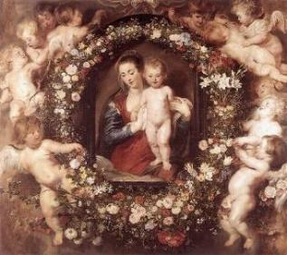
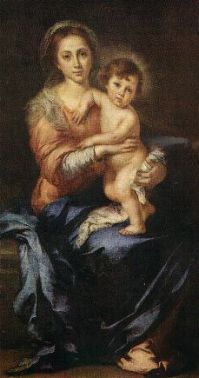
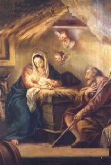
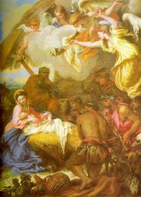
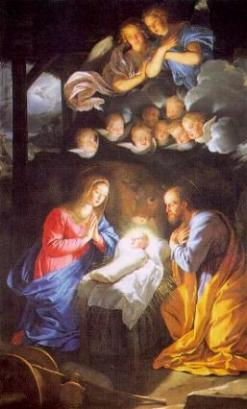
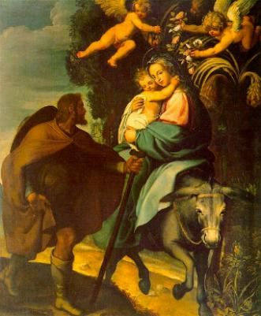

- O Evangelho escrito por São Mateus apresenta a genealogia do
SENHOR, informando as 14 primeiras gerações de Abraão até Davi; depois seguem
mais 14
- O Evangelho escrito por São Mateus apresenta a genealogia do
SENHOR, informando as 14 primeiras gerações de Abraão até Davi; depois seguem
mais 14
gerações de Davi até o exílio do povo judeu na Babilônia e finalmente, as
derradeiras 14 gerações do exílio na Babilônia até o Nascimento de CRISTO,
encerrando o evangelista com o seguinte versículo:
“... Jacó gerou José, o esposo de
MARIA, da qual nasceu JESUS, chamado CRISTO”.(Mt 1,16)
- São João apresenta no seu Evangelho, JESUS (o VERBO de DEUS) dentro da
Santíssima Trindade, mostrando que ELE o FILHO, junto com o PAI e o ESPÍRITO SANTO
se manifestaram para destruir o pecado, salvando a humanidade de todas as gerações,
que ELES Mesmos criaram:
“No princípio era o VERBO
(a Palavra de DEUS) e o VERBO
estava com DEUS (o SANTO PAI, CRIADOR) e o VERBO era DEUS.
No princípio, ELE
(o VERBO) estava com DEUS.
Tudo foi feito por meio DELE (do VERBO) e sem ELE nada foi feito de
tudo o que existe.
NELE estava a VIDA
(o ESPÍRITO SANTO, ESPÍRITO DE DEUS) e a VIDA era
a Luz dos homens e a Luz brilha nas trevas, mas as trevas não a apreenderam.
Houve um homem enviado por DEUS. Seu nome
era João. Este veio como
testemunha, para dar testemunho
da LUZ (JESUS e do seu ESPÍRITO SANTO), a fim de que todos cressem por meio dele. Ele não era a LUZ, mas veio para
testemunhar da LUZ, a LUZ verdadeira que, vindo ao mundo, ilumina todo homem.
ELE
(JESUS) estava no
mundo e o mundo foi feito por meio DELE (do VERBO, PALAVRA DE DEUS)
, mas o mundo (a humanidade)
não O conheceu.
Veio (JESUS veio)
para o que era seu e os seus não O
receberam.
Mas a todos que O receberam deu o poder de
se tornarem filhos de DEUS: os que crêem em seu nome, que não nasceram do
sangue, nem da vontade da carne, nem da vontade do homem (porque são
predestinados), mas de DEUS.
E o VERBO
(JESUS) se fez carne, e habitou entre nós; e nós vimos
a sua glória, como a glória do Unigênito do PAI (FILHO DE DEUS),
cheio de graça e de verdade.”(Jo 1,1-14)
- Esta apresentação quer realçar que o PAI, o FILHO e o ESPÍRITO SANTO, embora sejam Três
Pessoas Divinas distintas, diferentes uma da outra, constituem Um Único e Mesmo DEUS,
UNO E TRINO. Um Mistério de Fé que desafia o entendimento da humanidade.
Pela Vontade do PAI ETERNO e ação do ESPÍRITO DE
DEUS, o DIVINO FILHO veio até nós, encarnando-se no Homem JESUS DE NAZARÉ,
com natureza humana e Divina, nasceu da VIRGEM MARIA, no meio da humanidade que
ELE veio Redimir e Salvar, em cumprimento a uma sublime e extraordinária Missão
de Amor.

- Em certa tarde, no ano 748 da fundação da cidade de Roma, Maria tinha
terminado os seus
afazeres domésticos e descansava em seu pequeno quarto, quando surgiu o Arcanjo Gabriel
e lhe anunciou que o PAI ETERNO lhe havia cumulado com muitas graças e que ela daria à
luz um filho, no qual colocaria o nome de JESUS. Este filho,
obra do ESPÍRITO DE DEUS, será grande e será chamado Filho do Altíssimo.
Maria de Nazaré, entre o susto da inusitada ocorrência
e a emoção de estar diante do sobrenatural, deliciou a sublimidade do Amor Divino e
repleta de júbilo concordou com o projeto de DEUS, pronunciando o seu “Sim”. (Lc 1,26-38)
Na sequência dos acontecimentos, viajou para Ain Karin a fim
de dar assistência a sua prima Isabel que estava grávida, e que deu à luz a São João Batista,
o "Precursor e Anunciador"
do Messias, JESUS DE NAZARÉ. No retorno à Nazaré, depois de agilizadas
as providências legais, celebrou o seu casamento com José.
Naquela época, a Palestina, o país dos judeus, cuja área
corresponde a atual ocupada por Israel e mais uma pequena parte da Jordânia,
estava dominada pelas tropas romanas, que invadiram todas as regiões circunvizinhas.
Com o objetivo de conhecer a população que habitava
as áreas ocupadas, o Imperador César Augusto, ordenou através de édito, o recenseamento
em todos os territórios sob o poder de Roma.Todos os homens eram obrigados a se
inscreverem onde nasceram, nas guarnições militares instaladas nas diversas
cidades.
José, esposo de Maria, tinha nascido em Belém, e
por isso, estava obrigado a atender a convocação do Imperador. Para lá viajou
em companhia de sua esposa, para cumprir um dever cívico e atender a ordem
emanada do poder de Roma, muito embora Maria estivesse no oitavo mês de
gravidez.
 Em face da grande movimentação de pessoas, por
causa do recenseamento, ao chegarem, não encontraram nenhuma acomodação nas
casas dos parentes e amigos, já ocupadas por outras pessoas. Foram para uma
pequena Gruta que ficava na entrada da cidade e que às vezes era utilizada como
estrebaria.
Em face da grande movimentação de pessoas, por
causa do recenseamento, ao chegarem, não encontraram nenhuma acomodação nas
casas dos parentes e amigos, já ocupadas por outras pessoas. Foram para uma
pequena Gruta que ficava na entrada da cidade e que às vezes era utilizada como
estrebaria.
“Enquanto lá estavam, completaram-se os
dias para o parto, e ela deu à luz o seu Filho Primogênito, envolveu-o com
faixas e reclinou-o numa manjedoura...” (Lc 2,6-7)
Nasceu JESUS de NAZARÉ, o FILHO DE
DEUS, que veio para Redimir a humanidade de todas as gerações perante
o PAI ETERNO, propiciando-lhes a salvação eterna. Deixou-nos o seu exemplo
de Homem, revelado na integridade de um caráter sem mancha, na permanente
disponibilidade de servir, na atenciosa, eficiente e determinada postura
pessoal, que cativava e deixava extasiada multidões de pessoas que se aproximavam
DELE; na Obra admirável que realizou, representada por preciosos ensinamentos
e uma quantidade incontável de milagres em benefício do povo, além de instituir
os Sacramentos, que são recursos eficazes e insubstituíveis a salvação
daqueles que quiserem viver uma verdadeira vida em DEUS.

- A Sagrada Escritura pouco descreve
sobre a Infância e Juventude do SENHOR, talvez com o propósito inspirado de
fazer-nos compreender que ELE viveu como as crianças de sua idade, ao lado de
seus pais, cercado pelo carinho e a estima dos parentes e amigos da família.
Por esta razão, encontram-se vários livros sobre a Vida de JESUS, onde
sobressai com ênfase, a imaginação dos escritores, que descrevem passagens
posicionando o comportamento do Menino-DEUS, brincando de esconder, jogando um
tipo de jogo com bolas, parecido com “boliche”
ou “bocha”, utilizando a “funda” para arremessar pedras com a finalidade de derrubar objetos encima
de um muro, etc, comportamento semelhante ao das crianças judías da
época.
SENHOR, talvez com o propósito inspirado de
fazer-nos compreender que ELE viveu como as crianças de sua idade, ao lado de
seus pais, cercado pelo carinho e a estima dos parentes e amigos da família.
Por esta razão, encontram-se vários livros sobre a Vida de JESUS, onde
sobressai com ênfase, a imaginação dos escritores, que descrevem passagens
posicionando o comportamento do Menino-DEUS, brincando de esconder, jogando um
tipo de jogo com bolas, parecido com “boliche”
ou “bocha”, utilizando a “funda” para arremessar pedras com a finalidade de derrubar objetos encima
de um muro, etc, comportamento semelhante ao das crianças judías da
época.
Embora JESUS em sua Infância tenha se
manifestado como as crianças de seu tempo, não podemos nos distanciar do
balizamento Divino, lembrando-nos que ELE é o FILHO DE DEUS e
como tal, mesmo sendo uma criança, através de seus olhos, de suas palavras e
de suas atitudes, com certeza aconteceram maravilhosas manifestações, que
devem ter deixado José e Maria embevecidos e profundamente mergulhados no
mistério de seu Divino FILHO. E tudo devia acontecer de maneira tão natural e
encantadora, que podemos imaginar José, sempre sisudo, no seu habitual silêncio
cotidiano, muitas vezes sorrir interiormente e fechar os lábios,
para não deixar escapar uma palavra de alegre admiração ou mesmo um sorriso
de júbilo, ao presenciar ou observar um inteligente procedimento de JESUS; esta
realidade também podemos constatar, lendo versículos da Sagrada Escritura,
em que Maria com frequência ficava admirada das coisas que seu FILHO fazia
e “conservava a lembrança de todos os fatos em seu coração”. (Lc 2,51)
Isto significa dizer, que JESUS, como todas as
pessoas, também passou pela evolução física de sua natureza humana, mas sem modificar
sua condição sobrenatural, ou seja, sem alterar a grandeza, o poder e a força de
sua natureza Divina.



 Próxima Página
Próxima Página
Retorna ao Índice